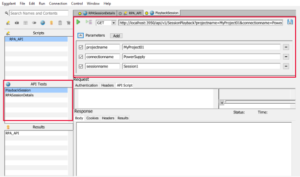

Eggplant Script Example to Run RPA API
We provide several detailed examples of how to run RPA API with Eggplant. These examples include:
In addition to these examples, there are many more RPA API functions available in the RPA API Reference documentation. By following these examples, you will be able to interact with RPA using the API, and gain a better understanding of the various functions and features available through the API.
Playback Session Example
1. Create a new API Test named "PlaybackSession" using the GET method. Set the URL to:
URL Example:
http://localhost:3950/api/v1/SessionPlayback?projectname=MyProject01&connectionname=PowerSupply&sessionname=Session1

Example: Playback Session API Tests
This API Test requires three parameters :
-
projectname: MyProject01
-
connectionname: PowerSupply
-
sessionname: Session1
Ensure that you adapt the parameter values to meet your specific requirements.
2. Call the "PlaybackSession" API Test in a script. This script sends an API request to play back a Session, retrieves the id field from the JSON response, and stores it in a variable named idValue, which is then displayed. Here's an example script:
Script Example:
// Make the API call and store the response into the "response" object
put PlaybackSession() into response
// Store the response body in a variable called "responseBody"
put response.responseBody into responseBody
// Parse the response body into a JSON object
set jsonResponse to JSONValue(responseBody)
// Get the value of the "id" field from the JSON object and store it in a variable called "idValue"
put jsonResponse.id into idValue
// Display the value of the "idValue" variable, this variable can be used in stop Session playback and check Session playback test.
put idValue
To playback a Session with different parameters, you can overwrite the API Test properties. In this example, we will change the value of the sessionname parameter to play back a different Session by overwriting the URL used in the "PlaybackSession" API test :
Script Example:
PlaybackSession{url:"http://localhost:3950/api/v1/SessionPlayback?projectname=MyProject01&connectionname=PowerSupply&sessionname=Session2"}
Check Session Playback Example
1. Create a new API Test named "CheckSessionPlayback" using GET method, set the URL to:
URL Example:
http://localhost:3950/api/v1/CheckSessionPlayback?playbackid=16970
This API Test requires one parameter :
The Session Playback ID can be obtained from the response of the "PlaybackSession" API Test, which can then be used as a parameter in the "CheckSessionPlayback" API Test.
2. Call the "CheckSessionPlayback" API Test in a script. This script calls the "CheckSessionPlayback" API test and displays the response body of the response.
Script Example:
// Call the CheckSessionPlayback API test and store the response in the "response" object
put CheckSessionPlayback() into response
// Display the response body of the response
put response.responseBody
You can also input the Playback ID value which is stored as idValue when running the PlaybackSession script in the last example.
Script Example:
// Make the API call and store the response into the "response" object
put PlaybackSession() into response
// Store the response body in a variable called "responseBody"
put response.responseBody into responseBody
// Parse the response body into a JSON object
set jsonResponse to JSONValue(responseBody)
// Get the value of the "id" field from the JSON object and store it in a variable called "idValue"
put jsonResponse.id into idValue
// Display the value of the "idValue" variable, this variable can be used in stop Session playback and check Session playback test.
put idValue
// call the CheckSessionPlayback API test input the Playback ID value which is stored as idValue
CheckSessionPlayback{url:"http://localhost:3950/api/v1/CheckSessionPlayback?playbackid="&idValue}
// Call the CheckSessionPlayback API test and store the response in the "response" object
put CheckSessionPlayback() into response
//Display the response body of the response
put response.responseBody
Playback Workflow Example
1. Create a new API Test named "PlaybackWorkflow" using GET method, set the URL to:
URL Example:
http://localhost:3950/api/v1/WorkflowPlayback?projectname=MyProject01&workflowname=Workflow1
This API Test requires two parameters:
-
projectname: MyProject01
-
workflowname: Workflow01
Ensure that you adapt the parameter values to meet your specific requirements.
2. Call the "PlaybackWorkflow" API Test in a script. This script makes an API call to play back a Workflow, extracts the id field from the JSON response, and stores it in a variable called idValue, which is then displayed.
Script Example:
// Make the API call and store the response into the "response" object
put PlaybackWorkflow() into response
// Store the response body in a variable called "responseBody"
put response.responseBody into responseBody
// Parse the response body into a JSON object
set jsonResponse to JSONValue(responseBody)
// Get the value of the "id" field from the JSON object and store it in a variable called "idValue"
put jsonResponse.id into idValue
// Display the value of the "idValue" variable
put idValue
You can playback a Workflow with different parameters by overwrite API Test Properties. This example overwrites the URL used in the API test “PlaybackWorkflow". We changed the value of workflowname from “Workflow1” to “Workflow2” to playback another Workflow.
Script Example:
PlaybackWorkflow(url:"http://localhost:3950/api/v1/WorkflowPlayback?projectname=MyProject01&workflowname=Workflow2")
Stop Playback Workflow Example
1. Create a new API Test named "StopPlaybackWorkflow" using GET method, set the URL to:
URL Example:
http://localhost:3950/api/v1/StopWorkflowPlayback?playbackid=17284
This API Test requires one parameter:
The Workflow Playback ID can be obtained from the response of the "PlaybackWorkflow" API Test we create in the last example, which can then be used as a parameter in the "StopPlaybackWorkflow“ API Test.
2. Call the "StopPlaybackWorkflow" API Test in a script. This script calls the StopWorkflowPlayback API test and displays the response body of the response.
Script Example:
// Call the StopWorkflowPlayback API test and store the response in the "response" object
put StopWorkflowPlayback() into response
// Display the response body of the response
put response.responseBody
All Sessions/Workflows Details Example
1. Create a new API Test named "AllSessionsDetails" using GET method, set the URL to:
URL Example:
http://localhost:3950/api/v1/AllSessionsDetails
Create a new API Test named "AllWorkflowsDetails" using the GET method. Set the URL to:
URL Example:
http://localhost:3950/api/v1/AllWorkflowsDetails
2. Call the two API Tests in a script. This script makes API calls to retrieve details of all sessions and workflows, and displays the corresponding response bodies.
Script Example:
// Make API call to get details of all Sessions
put AllSessionsDetails() into response
// Display the response body containing Sessions details
put response.responseBody
// Make API call to get details of all Workflows
put AllWorkflowsDetails() into response
// Display the response body containing Workflows details
put response.responseBody